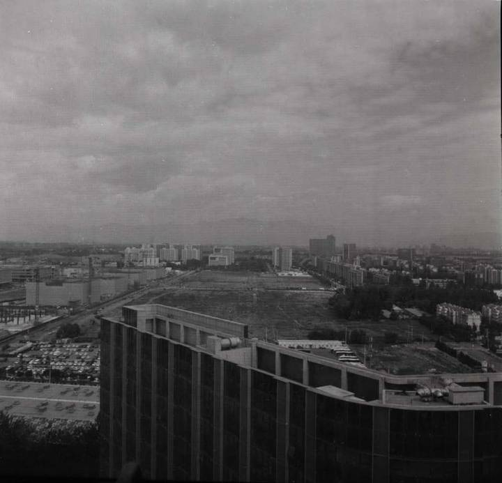
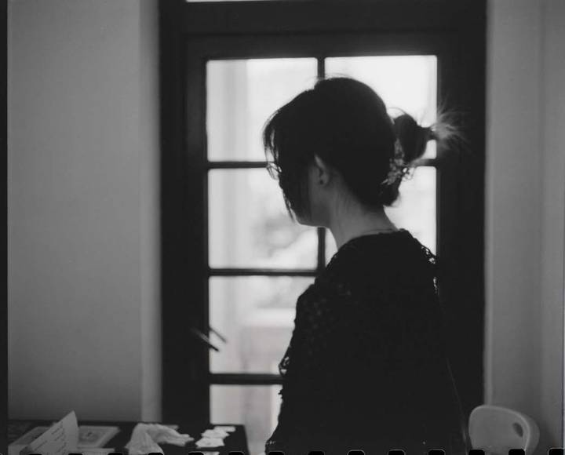
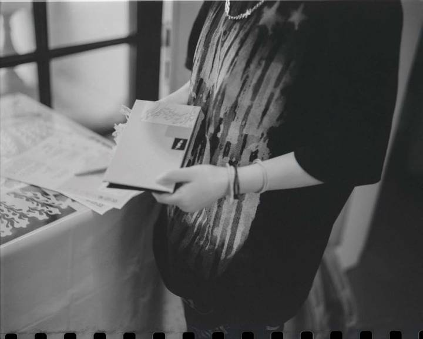
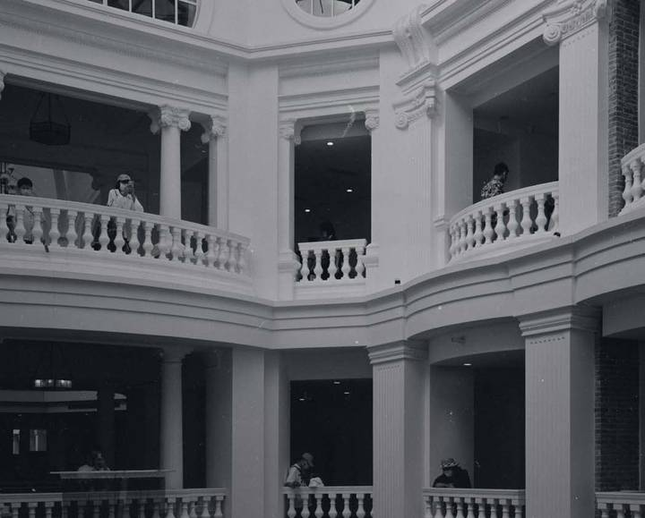
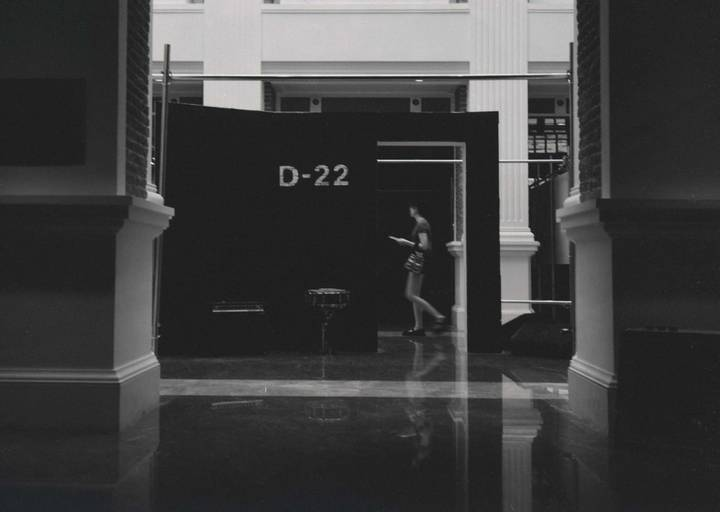
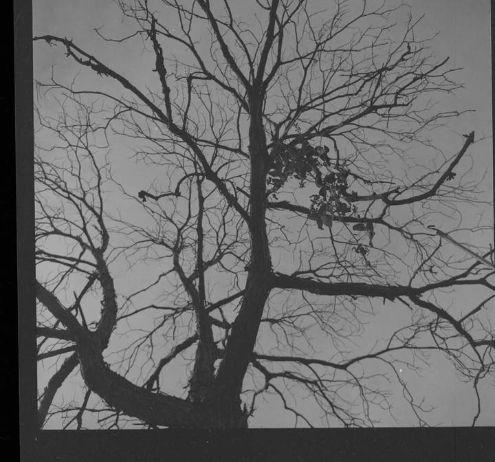
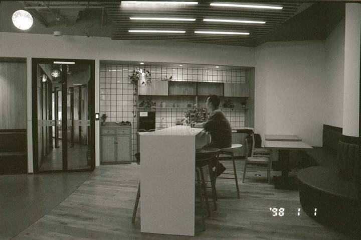
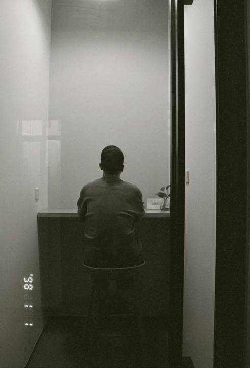
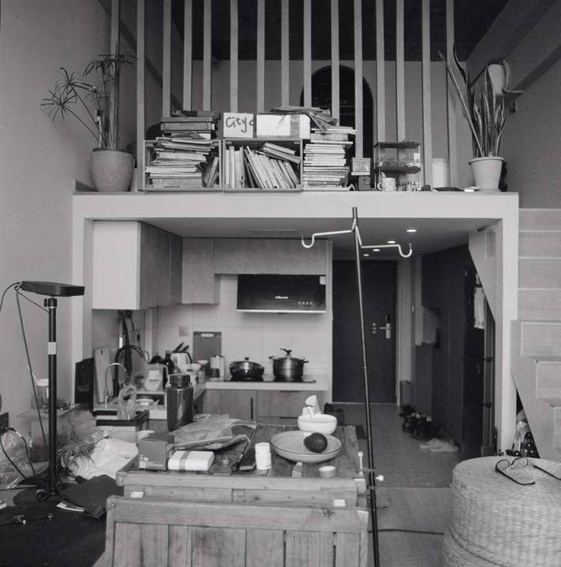
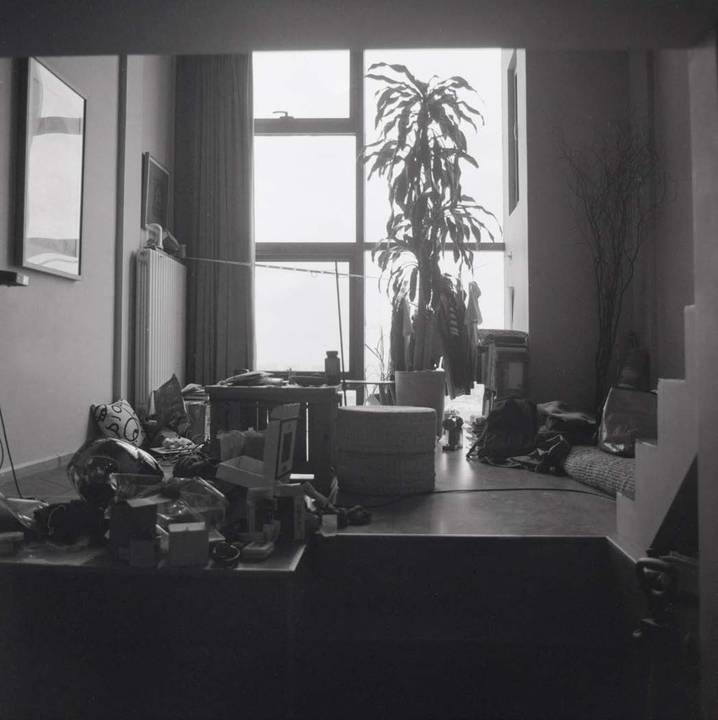

艺术项目 / 城市摄影
五公里。
从居住的地方出发
总听人说，离居住地五公里外的事情就与你无关了。这个系列从身边出发，看城市的环线、建筑、室内与人怎样彼此相连。
把熟悉的地方，再看一遍。
城市在生长，生活的半径也在改变。旧有的烟火与新的空间并置，建筑、道路和人共同组成不断变化的风景。
在窗边、阅览室和街角停下来。镜头留下的，是日常空间里容易被忽略的距离、光线与安静。











停下来，再看一眼。
继续浏览艺术项目